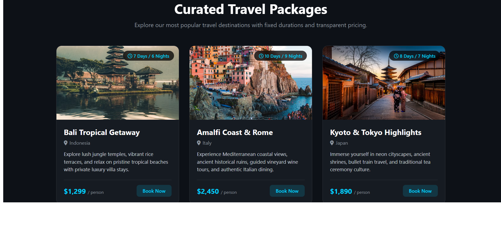

HTML
I use HTML to structure web pages with headings, paragraphs, links, images, navigation, and meaningful content sections.
Web StructureBCA STUDENT · ASPIRING UI/UX DESIGNER
I'm a computer applications student passionate about website design, programming, and digital experiences. I enjoy learning new technologies and turning ideas into organized, user-friendly web interfaces.

01 — ABOUT ME
I'm Mujahid Pasha PM, a fifth-semester Bachelor of Computer Applications student at Vikram Degree College, Chintamani. I'm interested in UI/UX design, front-end development, programming, and creating websites that are both attractive and easy to navigate.
My learning journey combines programming fundamentals with practical website development. I enjoy exploring page layouts, visual hierarchy, colours, navigation, and the small details that help make a digital experience easier to use.
As a fresher, I'm continuing to improve through academic learning, personal practice, and project work. My goal is to build strong technical foundations, learn from others, and gradually grow into a capable developer and designer.
02 — MY SKILLS
I'm building my skills through coursework, practice, and hands-on projects. Here are the areas I'm learning and developing.
I use HTML to structure web pages with headings, paragraphs, links, images, navigation, and meaningful content sections.
Web StructureI'm learning to style websites using colours, typography, spacing, flexible layouts, grids, and responsive design techniques.
Visual StylingMy learning includes programming fundamentals, variables, data types, conditional statements, loops, and object-oriented concepts.
ProgrammingI'm developing an understanding of Python syntax, basic operations, programming logic, and problem-solving through code.
FoundationsI'm interested in visual hierarchy, page layouts, usability, navigation, and designing interfaces around users' needs.
Interface DesignI've practised creating repositories, uploading project files, managing code changes, and sharing my work through online repositories.
Version Control03 — SELECTED PROJECTS
My projects help me connect what I learn with practical work, explore website development, and gain experience working through design and implementation tasks.
 This project is part of my practical project
experience. It gives me an opportunity to present
my work, apply relevant knowledge, and develop
my understanding of planning and completing
a project.
This project is part of my practical project
experience. It gives me an opportunity to present
my work, apply relevant knowledge, and develop
my understanding of planning and completing
a project.

A team-based website project created using Nicepage. It includes multiple connected pages, including Home, About, and Contact, organized into a consistent website experience.04 — EDUCATION
My education is helping me build a foundation in computer applications, programming, and technology.
Vikram Degree College, Chintamani
Fifth Semester
Through my degree, I'm developing my understanding of computing concepts and programming while strengthening my practical knowledge through website design and project work.
05 — CONTACT
I'm interested in connecting with fellow students, collaborating on projects, learning from experienced developers, and exploring suitable opportunities to improve my skills.
If you'd like to discuss a project, share ideas, or connect professionally, feel free to reach out.
Replace the example email and GitHub username with your real details before publishing.